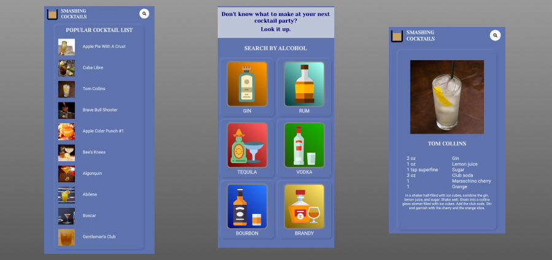

PROJECTS
Quiz App
This is an application that utilizes the ability of jQuery to experiment with interactive web apps. It's a simple quiz app that ask a series of questions and responds each question with a reaction if the user gets the answer correct or wrong while calculating the score and letting the user know which question they're currently on. The application introduced me to the use of jQuery for DOM manipulation and traversal. The end result displays the total score and gives them a message depending on the score.
Tech used: HTML5, CSS3, JavaScript, jQuery

Smashing Cocktails
This is a fun and unique way to be recommended a list of cocktails to try. With this application, you're able to search for cocktail by name or filter a list by your favorite spirit. The application displays all the list on the DOM and was also a way to practice making API calls.
Tech used: HTML5, CSS3, JavaScript, jQuery
